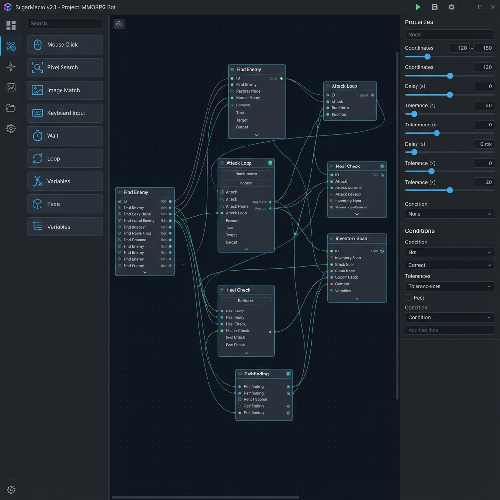

슈가매크로 (SugarM) 가이드
SugarM은 노드 기반 비주얼 프로그래밍 방식의 차세대 게임 자동화 도구입니다.
코딩 없이 드래그 앤 드롭만으로 복잡한 자동화 로직을 구축하세요.
SugarEditor
매크로를 설계하고 편집하는 도구
SugarPlayer
최적화된 성능으로 매크로를 실행하는 도구
시스템 요구사항
| OS | Windows 10/11 (64-bit) |
|---|---|
| GPU | DirectX 11 지원 (비전 인식 사용 시 CUDA 권장) |
| RAM | 4GB 이상 (8GB 권장) |
| Hardware | Arduino Leonardo (선택: 하드웨어 에뮬레이션용) |
에디터 (SugarEditor) 사용법
직관적인 인터페이스로 빠르게 로직을 구성합니다.

주요 인터페이스
- 도구상자 (Toolbox): 사용할 수 있는 모든 노드가 나열되어 있습니다.
- 캔버스 (Canvas): 노드를 배치하고 연결하는 무한한 작업 공간입니다.
- 속성창 (Properties): 선택한 노드의 세부 옵션(좌표, 이미지, 키값 등)을 설정합니다.
- 미니맵 (Minimap): 거대한 로직 전체를 조망하고 이동할 수 있습니다.
노드 배치 방법 (Tip!)
노드 시스템 & 연결
노드 연결하기
노드 오른쪽의 ● 출력 포트를 클릭하고, 다음 노드의 ● 입력 포트로 드래그하여 연결합니다.
주요 노드 목록
| Start | 매크로의 시작점 (필수) |
|---|---|
| Click / Move | 마우스 클릭 및 이동 제어 |
| Wait | 지정된 시간(ms) 만큼 대기 |
| Keyboard | 키 입력 또는 텍스트 타이핑 |
| Detect (YOLO) | AI 비전 인식 (몬스터/아이템 감지) |
| Loop / Break | 반복문 생성 및 중단 |
| Condition | 조건에 따른 분기 처리 |
실행기 (SugarPlayer)
완성된 .sugarm 파일을 실행하는 전용 도구입니다.
실행 순서
- 파일 열기: [파일] 버튼을 눌러 .sugarm 파일을 불러옵니다.
- 타겟 설정: [타겟 변경] 버튼을 눌러 매크로가 작동할 게임 창을 선택합니다.
- 실행: F7 키를 누르거나 [재생] 버튼을 클릭합니다.
- 정지: F8 키를 누르거나 [정지] 버튼을 클릭합니다.
아두이노 연동 (Hardware Mode)
Arduino Leonardo를 연결하면 소프트웨어 신호 대신 실제 하드웨어 입력(HID)으로 인식되어 강력한 보안 우회 기능을 제공합니다.
SugarM.ino 펌웨어를 업로드합니다.
단축키 모음
Editor
| Open / Save | Ctrl + O / S |
|---|---|
| Undo / Redo | Ctrl + Z / Y |
| Copy / Paste | Ctrl + C / V |
| Duplicate | Ctrl + D |
| Delete | Delete |
| Group / Ungroup | Ctrl + G / Ctrl + Shift + G |
| Alignment (H/V) | Ctrl + H / Ctrl + Shift + H |
| Auto Arrange | Ctrl + L |
| Disable Node | Ctrl + / |
| Search Node | Ctrl + F |
| Bookmarks | Ctrl + 1~9 (Set) / 1~9 (Go) |
| Fast Add | Space (Tap) |
| Pan Canvas | Space + Drag |
Player
| Start Macro | F7 |
|---|---|
| Stop Macro | F8 |
| Pause / Resume | F9 |
| Recording Start / Stop | F10 / F11 |
문제 해결 (FAQ)
Q. 클릭이 엉뚱한 곳에 됩니다.
A. 타겟 창의 해상도가 변경되었거나 위치가 인식되지 않은 경우입니다. 타겟을 다시 선택하거나 매크로의 좌표 기준을 확인하세요.
Q. OCR이 작동하지 않습니다.
A. Tesseract OCR이 설치되어 있는지, 그리고 설정 경로가 올바른지 확인해주세요.
Q. 아두이노 연결이 안 됩니다.
A. COM 포트 번호를 확인하고, 다른 프로그램(예: Arduino IDE)이 포트를 점유하고 있지 않은지 확인하세요.
Q. 매크로 속도 조절은 어떻게 하나요?
A. 동작 사이사이에 Wait 노드를 추가하여 딜레이를 조절하세요. 너무 빠르면
게임 입력이 씹힐 수 있습니다.